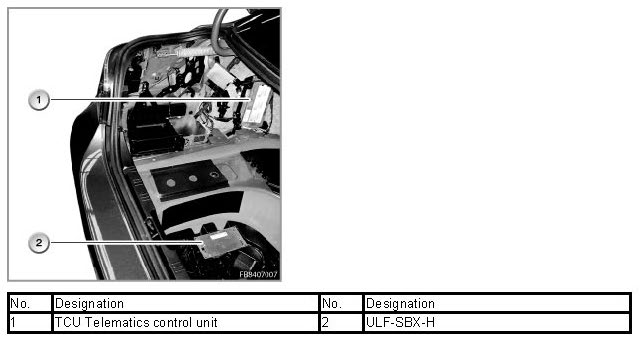

Notes on Parallel Installation of TCU and ULF-SBX-H
Notes On Parallel Installation Of TCU And ULF-SBX-H
In this vehicle, the following control units are installed in parallel:
- TCU Telematics control unit
- ULF-SBX-H Interface box
These control units implement the following functions:
- TCU Telematic Control Unit. The TCU covers all the telephone and Telematic functions. All aerials as well as other telephone hardware are connected to the TCU.
- ULF-SBX-H interface box High With parallel installation, the ULF-SBX-H exclusively operates the SA6FL optional equipment "USB audio interface". Telephone functions are not implemented in this control unit.
The installation location of the TCU Telematic Control Unit and the ULF-SBX-H interface box High is shown below with the E60 as an example.

No liability can be accepted for printing or other errors. Subject to changes of a technical nature